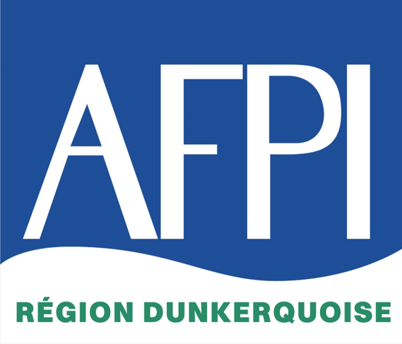

Storyboard v1 : les 14 scènes au moment fort de chaque plan. Aucune animation ici : le placement, les textes et les couleurs sont ceux de la version finale.
1920×10802 min 4814 scènesvoix off FRv1

Bienvenue à l'AFPI Région Dunkerquoise
01 · LOGO · ÉTINCELLE DE SOUDURE
01 · OUVERTUREframe-01 · 0–9 s
Le logo se construit pièce par pièce sous une étincelle de soudure, puis le titre monte en deux lignes. Sortie : volet vers la gauche.
volet mécanique ←
Réseau Pôle Formation · l'outil de formation de la métallurgie
Dunkerque Centre Jacques Balloy
Gravelines Antenne des Rives de l'Aa
02 · QUI SOMMES-NOUSframe-02 · 9–22 s
Zoom sur la carte du littoral, deux repères rouges s'allument, la ligne les relie, puis chaque repère s'ouvre sur la photo du centre. Nom du réseau à confirmer.
zoom-fondu vers les mots
Analyser Conseiller Former Professionnaliser Développer les compétences
Créer de la valeur par la formation
03 · NOS MISSIONSframe-03 · 22–34 s
Les mots tombent un par un sur un coup sec, le dernier s'allume en rouge. La bande rouge monte du bas avec la phrase de conclusion (point fixe, rien ne bouge).
SST · travaux en hauteur · habilitations · amiante · ATEX · CATEC · conduite d'engins
Tertiaire
Management · gestion de projet · langues étrangères · bureautique
04 · NOS DOMAINESframe-04 · 34–56 s
Quatre cartes entrent à tour de rôle (cascade vers la gauche), chaque carte a son pictogramme rouge et sa photo. La carte active monte, les autres se calent derrière.
cartes balayées ←
Chacun trouve sa place
01
Entreprises
02
Salariés
03
Demandeurs d'emploi
04
Jeunes & alternance
05 · POUR QUIframe-05 · 56–65 s
Quatre profils entrent en cascade, chaque pictogramme se dessine d'un trait. Un seul focal : le titre.
tuiles basculantes
Une qualité reconnue
Qualiopi
CQPM
TOSA
TOEIC
Certificat Voltaire
LOGOS OFFICIELS À FOURNIR · ICI : PLACEHOLDERS
06 · QUALITÉframe-06 · 65–74 s
Cinq badges se posent comme des tampons, avec un petit rebond. Les logos officiels remplacent les ronds quand vous les fournirez.
volet vers le bas
Votre arrivée
au centre
PARTIE 2 · QUELQUES REPÈRES AVANT DE COMMENCER
07 · TRANSITIONframe-07 · 74–79 s
Un panneau rouge ferme la partie 1 et laisse la place au titre. C'est le seul écran de transition, il dure 5 secondes.
volet rouge ←
8h00–12h00 13h00–16h00
08 · ACCÈS ET HORAIRESframe-08 · 79–93 s
Vue de dessus : la voiture entre, se range en marche arrière dans la place, la flèche orange se trace. À droite, l'horloge anime les deux plages horaires.
volet ←
EPI obligatoires
Indiqués sur votre convocation. Contrôlés avant toute prise de poste.
Casque
Lunettes
Chaussures de sécurité
Gants
Protections auditives
09 · ÉQUIPEMENTS DE PROTECTION (EPI)frame-09 · 93–105 s
Le portrait entre au centre, chaque EPI s'allume en rouge quand il est cité, et le portrait « se contrôle » avec une coche. Image du portrait à confirmer (aspect IA).
volet ←
EN ATELIER · 3 RÉFLEXES
Pas de machine sans formation
Autorisation du formateur obligatoire.
Accident ? Prévenez le responsable
Il appellera les secours.
Ordre Propreté Rangement
10 · EN ATELIERframe-10 · 105–117 s
Trois panneaux : le deuxième est le plus lourd (le responsable appelle). Un panneau à la fois passe en avant, les autres reculent.
volet ←
Règlement intérieur
AFFICHÉ DANS LE HALL D'ACCUEIL
✕
Sorties interdites pendant les pauses
✓
Respect des horaires
✕
Ni nourriture ni boisson en salle et en atelier
✕
Interdiction de fumer à l'intérieur
✓
Zones fumeurs prévues
11 · RÈGLEMENT INTÉRIEURframe-11 · 117–131 s
Chaque règle arrive en bandeau, avec son pictogramme rouge « interdit » ou vert « autorisé ». Les bandeaux se calent en haut au fur et à mesure.
volet rouge ←
Sécurité incendie
1 Donnez l'alerte ou déclenchez l'alarme 2 Ne prenez aucun risque 3 N'ouvrez ni portes ni fenêtres 4 Issue de secours la plus proche, sans revenir en arrière 5 Point de rassemblement : attendez les consignes
12 · SÉCURITÉ INCENDIEframe-12 · 131–153 s
Ambiance rouge/orange. Les cinq consignes arrivent une par une pendant que la flèche se trace de « vous êtes ici » jusqu'au point de rassemblement vert. Seul écran sans fond bleu nuit.
volet orange ←
Toute l'équipe est à votre écoute.
Excellente formation à tous !
13 · CLÔTUREframe-13 · 153–160 s
Le seul vrai fondu enchaîné de la vidéo : la photo d'équipe apparaît doucement, les deux phrases arrivent l'une après l'autre. Photo générique à remplacer si vous avez une photo de l'équipe AFPI.
fondu doux
www.afpi-formation.com
03 28 60 80 30 accueil@afpi-formation.com
Dunkerque · Centre Jacques Balloy Z.A.E. du Pont Loby, Rue de Rome · 59640 Dunkerque
Gravelines · Antenne des Rives de l'Aa Zone de la Leurette, Route du développement · 59820 Gravelines
14 · ÉCRAN DE FINframe-14 · 160–168 s
Le logo se reconstruit comme à l'ouverture (boucle de marque), le site s'écrit en capitales, le téléphone s'allume en rouge, puis les deux centres glissent à droite.
CARTE DES TRANSITIONSdirection par défaut : vers la gauche
Volets mécaniques et étincelle ; seul fondu doux à la clôture (13).
Palette et polices
#0B1B33#1F4E96#F4F1EA#E2061B#FF7A1A#2A8C5E
Oswald 700 (titres) · Montserrat 500 (texte) · IBM Plex Mono (étiquettes) Bannis : dégradé plein écran, logo redessiné, textes de photo illisibles.
TOKENSframe.md
Les polices s'affichent ici avec une police de secours si elles ne sont pas installées sur votre ordinateur. La vidéo finale embarque les vraies polices.